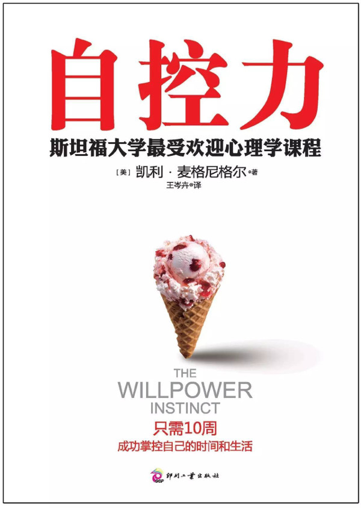

注：【】部分为笔者心得，非原文摘抄。
- “说不”属于意志力的一部分，而且是不可或缺的一部分。
- 意志力就是驾驭“我要做”、“我不要”和“我想要”这三种力量。
- 意志力是一种抑制冲动的能力，它使我们成为了真正的人。
- 顽强的意志力是一个人最突出的优点。
- 维持婚姻的秘诀就在于学会闭嘴。
- 如果没有了欲望，人们就会变得沮丧；如果没有了恐惧，人们就没法保护自己、远离伤害。在意志力挑战中获胜的关键，在于学会利用原始本能，而不是反抗这些本能。
- 注意力分散的人更容易向诱惑屈服。
- 如果你想有更强的自控力，就得有更多的自我意识。
- 经常让大脑冥想不仅会变得擅长冥想，还会提升自控力，提升集中注意力、管理压力、克制冲动和认识自我的能力。
- 专心呼吸是一种简单有效的冥想技巧。
- 简单的静坐对于意志力的冥想训练至关重要，学会不再屈服于大脑和身体产生的冲动。
- 冥想不是让你什么都不想，而是让你不要太分心，不要忘了最初的目标。
- 应激反应是一种管理能量的本能，这种本能决定了你将如何利用有限的体力和脑力。
- 意志力，就是选择去做最重要的事情的能力，即便那是件困难的事。
- 心率变异度能很好地反映意志力的程度，如果你的心率变异度高，那么无论在何种诱惑面前，你的意志力都会更强。
- 焦虑、愤怒、抑郁和孤独都与较低的心率变异度和较差的自控力有关。
- 自控力良药是锻炼。锻炼能提高心率变异度的基准线，从而改善自控力的生理基础。
- 如果你觉得锻炼太累了，或是没有时间锻炼，那么不妨将锻炼当做恢复体能和意志力的方法。
- 睡眠不足会影响身体和大脑吸收葡萄糖，而葡萄糖是能量的主要存储方式。当你疲惫的时候，你的细胞无法从血液中吸收葡萄糖。细胞没能获得足够的能量，你就会感到疲惫。由于你的身体和大脑急需能量，你就开始想吃甜食，想摄入咖啡因，因为它们无法对其有效利用。
- 真正的问题并不是强迫自己去睡觉，而是远离那些让自己没法睡觉的事。
- 当你不知道自己想做什么的时候，你或许需要知道自己不想做什么。
- 正如慢性压力会影响健康一样，试图控制所有的思想、情绪和行为也是一剂毒药，会给你带去过重的生理负担。
- 从压力和自控力中恢复的最佳途径就是放松。
- 压力是意志力的死敌，压力和自控的生理学基础是互相排斥的。
- 早晨的意志力最强，然后意志力随着时间的推移逐渐减弱。
- 【每天优先处理最需要意志力的事情。】
- 如果你觉得自己没有时间和精力去处理“我想要”做的事，那就把它安排在你意志力最强的时候做。
- 自控是所有大脑活动中耗能最高的一项。
- 人在饥饿的时候更愿意冒险。
- 大脑的首要任务是获得更多能量，而不是保证你做出明智的决定，实现你的长远目标。
- 长远来说，过度依赖糖分并不是自控的好办法，更好的办法是保证你的身体有足够的食物供应，这样能给你更持久的能量。
- 在一些小事上持续自控会提高整体的意志力。
- 如果你想彻底改变旧习惯，最好先找一种简单的方法来训练自控力、提高意志力，而不是设定一个过高的目标。
- 运动疲劳的原因或许不是肌肉无法继续工作，而是大脑中过度保护性的监控机制发挥了作用。
- 你觉得自己“疲惫”得没法自控的时候，试着挑战一下自己，挺过第一波疲惫感。不过，要注意不要训练过度，如果你不断感到能量枯竭，你就需要考虑一下自己是不是真的筋疲力尽了。
- 提高自控力的唯一方法就是提升我们的极限。
- 如果你自控的唯一动力就是成为一个足够好的人，那么每当你自我感觉良好的时候，你就会放弃自控。
- 不要把支持目标实现的行为误认为是目标本身。
- 在完成某个目标过程中取得的进步，会刺激人们做出妨碍完成目标的行为。
- 进步可以激励人，甚至可以提高未来的自控力，但前提是，你要把自己的行为当做努力完成目标的证据。
- 有时候，大脑会对能完成目标的可能性感到兴奋，它错把可能性当成真正完成了目标。
- 只要使你放纵的东西和使你觉得品德高尚的东西同时出现，就会产生光环效应。
- 当“光环效应”影响到你的意志力挑战时，你需要找到最具体的测量标准，以此判断这个选择是否和你的目标相符。当人们对罪恶行为做“忏悔”的时候，最有可能产生“许可效应”。
- 想要做到始终如一，我们就需要认同目标本身，而不是我们做善事时的光环。
- 当我们将意志力挑战看成衡量道德标准水平的标准时，善行就会允许我们做坏事，为了能更好地自控，我们需要忘掉美德，关注目标和价值观。
- 多巴胺会促使人们期待得到奖励，但不能感觉到获得奖励时的快乐。
- 多巴胺控制的是行动，而不是快乐。
- 和有保证的小奖励相比，我们大脑的奖励系统面对可能获得的大奖会更加兴奋。
- 追求奖励是多巴胺的主要目标。
- 有意识地控制进食的人面对食物时有更强的自控力，更能避免狼吞虎咽。
- 如果你想不出任何一件让你感觉良好的事，你就很难从床上爬起来做事。
- 奖励的承诺并不能保证快乐，但没有奖励的承诺却肯定会带来不快乐。有了奖励的承诺，我们就会屈服于诱惑。没有奖励的承诺，我们则会失去动力。
- 欲望没有绝对的好坏之分，重要的是欲望将我们引向哪个方向，以及我们是否足够明智，知道什么时候该听从欲望的声音。
- 最有效的解压方法包括：锻炼或参加体育活动、祈祷或参加宗教活动、阅读、听音乐、与家人朋友相处、按摩、外出散步、冥想或做瑜伽，以及培养有创意的爱好。
- 真正能缓解压力的不是释放多巴胺或依赖奖励的承诺，而是增加大脑中改善情绪的化学物质，如血清素、γ-氨基丁酸和让人感觉良好的催产素。
- 不要在压力面前相信自己的冲动。
- 增加责任感的不是罪恶感，而是自我谅解。
- 压力会引起欲望。
- 最容易决定做出改变的时候，就是处于低谷的时候。
- 只是承诺改变，要比真正坚持承诺和做出改变更容易，也更有乐趣。这就是为什么很多人乐于一次次放弃又重新开始，而不是真正想找到改变的方法。
- 乐观给我们动力，但少许的悲观能帮我们走向成功。
- 如果能预测自己什么时候，会如何受到诱惑和违背承诺，你就更有可能拥有坚定的决心。
- 去做真正让自己快乐的事，远离那些与我们生活无关的压力根源。
- 原谅曾经的失败，不要把它们作为屈服或放弃的借口。
- 想要增强控制力，自我同情比自我打击有效得多。
- 延迟折扣：等待奖励的时间越长，奖励对你来说价值越低。
- 只要你能创造一点距离，就会让拒绝变得容易起来。
- 做好拒绝诱惑的准备。
- 我们无法明确地预知未来，这为我们带来了诱惑，让我们拖延着不做某些事。
- 坏习惯和积极的改变都能像细菌一样在人群中传播，而且没有人能完全不受其影响。
- 人类大脑里不是只有一个自我，而是有很多不同的自我在相互竞争，争夺控制权。
- 反抗控制：当你看到别人的行为和自己最大的目标发生冲突时，你的大脑就会处于高度警惕的状态，它会让你的主要目标更坚定，它还会寻找策略帮你坚守目标。
- 社会认同：当群体里的其他人都在做某件事时，我们很容易认为这件事是应该做的聪明事。
- 让自己坚定决心的有效策略是公开你的意志力挑战。如果你相信别人会支持你走向成功并观察你的行为，你就会更有动力去做正确的事。
- 自控受到社会认同的影响，这使得意志力和诱惑都具有传染性。
- 罗密欧与朱丽叶效应：越是禁止两人相爱，他们爱得越深。
- 越是压抑消极情绪，人越可能变得抑郁。抑郁的人越是想摆脱痛苦的想法，就越会变得沮丧。
- 终于你的感受，但别相信你所有的想法。
- 认识自我、关心自我和提醒自己真正重要的事物，是自我控制的基石。
- 试图压抑自己的想法、情绪和欲望，只会产生相反的效果，让你更容易去想、去感受、去做你原本最想逃避的事。
- 自控力的关键就是理解不同的自我，而不是从根本上改变我们自己。
- 自控力最强的人不是从与自我的较量中获得自控，而是学会了如何接受相互冲突的自我，并将这些自我融为一体。
- 自控力秘诀就是集中注意力。